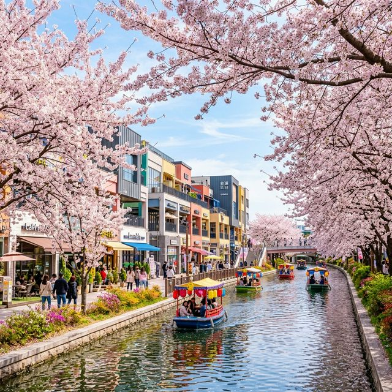
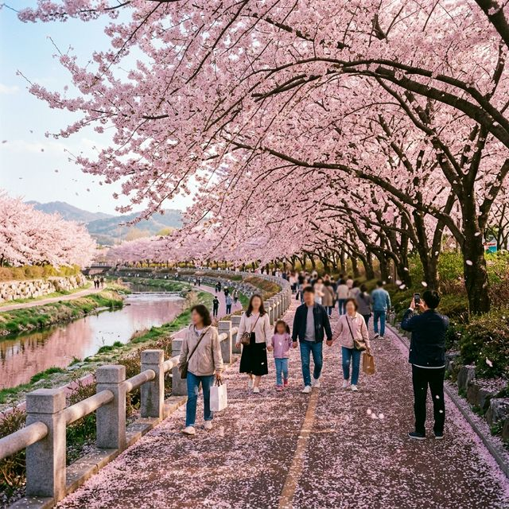
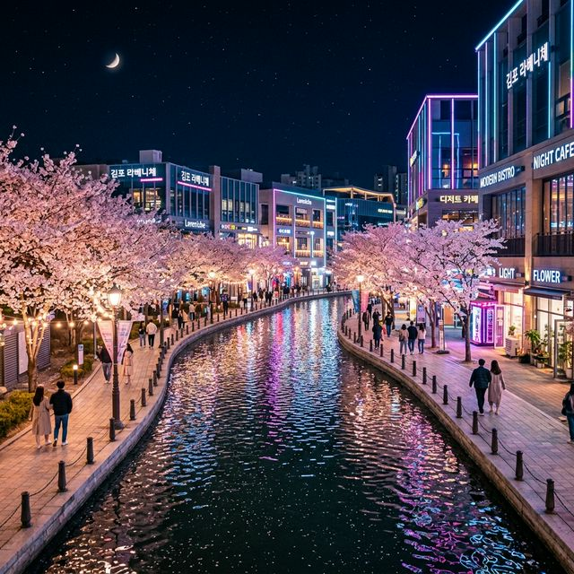

서울과 인접해 있으면서도 조금 더 여유롭고 이국적인 벚꽃 놀이를 즐기고 싶다면, 올해는 **김포**로 발길을 돌려보시는 건 어떨까요? 경기도 김포시는 최근 몇 년 사이 '한국의 베네치아'라 불리는 금빛수로를 중심으로 수도권 최고의 봄 나들이 명소로 급부상했는데요. 도심 속 수로를 따라 흐르는 분홍빛 벚꽃과 고즈넉한 대청호 못지않은 운치를 자랑하는 계양천 산책로는 가족, 연인과 함께 걷기에 더할 나위 없는 코스입니다. 오늘은 축제 개막과 함께 막바지 절정을 향해 달려가고 있는 김포 벚꽃축제의 핵심 스팟 2곳을 집중적으로 소개해 드리겠습니다.

김포 한강신도시의 심장부라 할 수 있는 **금빛수로**는 총 연장 2.68km의 인공 수로로, 그 주변을 감싸고 있는 상업시설인 라베니체(Laveniche)와 함께 이국적인 풍광을 선사합니다. 특히 봄철이면 수로 양옆으로 심어진 벚꽃들이 수면 위로 가지를 뻗어 환상적인 풍경을 연출하는데요. 이곳의 백미는 역시 **문보트(Moon Boat)**입니다. 밤이면 반짝이는 초승달 모양의 보트를 타고 벚꽃 터널 아래를 지나가는 경험은 김포 벚꽃 여행의 하이라이트라 할 수 있습니다. 2026년에는 야간 경관 조명이 더욱 보강되어, 낮보다 밤이 훨씬 화려하고 로맨틱한 분위기를 자아냅니다.
이국적인 세련미보다는 차분하고 압도적인 벚꽃 터널을 원하신다면 **계양천 산책로**가 정답입니다. 김포 사우동에서 걸포동으로 이어지는 이 구간은 오래된 벚나무들이 울창한 지붕을 형성하고 있어, 걷는 내내 벚꽃비 아래를 지나는 황홀함을 느낄 수 있습니다. 약 2km가 넘는 구간이 잘 정비된 데크길로 이루어져 있어 유모차나 휠체어 이용자도 큰 불편 없이 산책을 즐길 수 있는데요. 계양천은 밤마다 화려한 조명이 더해져 낮과는 또 다른 신비로운 매력을 발산합니다. 2026년 축제 기간에는 산책 공간 중간중간 버스킹 공연과 지역 예술가들의 플리마켓도 열려 축제 기분을 제대로 만끽할 수 있습니다.

올해 김포의 벚꽃은 예년보다 다소 이른 개화를 경험했습니다. 4월 첫째 주에 만개했던 벚꽃들이 **4월 11일 현재**는 바람이 불 때마다 흩날리는 '엔딩' 단계에 접어들었는데요. 하지만 계양천 일부 구간과 수변 쪽은 여전히 풍성한 꽃잎을 유지하고 있어, 이번 주말이 사실상의 마지막 관람 적기가 될 것으로 보입니다. 축제 위원회에서는 이번 주말 양일간 사우동과 장기동 일대에서 다양한 문화 행사를 진행하며 화려한 피날레를 예고하고 있습니다. 벚꽃의 화려함도 좋지만, 발밑에 쌓인 꽃잎 양탄자를 밟는 즐거움도 김포의 봄이 주는 큰 선물입니다.
| 스팟 명칭 | 특징 | 추천 시간대 |
|---|---|---|
| 금빛수로(라베니체) | 문보트, 이국적 카페거리 | 일몰 직후 (야경) |
| 계양천 산책로 | 울창한 벚꽃 터널 | 오전 10시 이전 (한적함) |
| 장기역 먹자골목 | 다양한 맛집 밀집 | 산책 후 저녁 식사 |

주말 김포 벚꽃 현장은 늘 인파와 차량으로 북적입니다. 특히 금빛수로 인근은 주차 공간 확보가 가장 큰 과제인데요. **라베니체 1~9차 공영주차장**이 곳곳에 있지만, 오후 시간에는 거의 만차 상태가 지속됩니다. 이럴 때는 장기역 인근 지식산업센터빌딩들의 주말 유료 주차장을 이용하거나, 대중교통인 **김포골드라인(장기역)**을 적극적으로 활용하시길 권장합니다. 장기역에서 수로까지는 도보로 약 10~15분 내외이며, 가는 길목마다 아기자기한 상점들이 있어 걷는 재미 또한 쏠쏠합니다. 계양천 방문 시에는 김포시청이나 인근 공영주차장을 이용하시고 도보로 이동하는 동선이 가장 깔끔합니다.
벚꽃이 지는 것을 아쉬워할 필요는 없습니다. 김포에서 마주하는 벚꽃 엔딩은 그 어떤 축제보다 화려하고 아름답기 때문입니다. 수로 위로 떨어지는 꽃잎들이 조명을 받아 반짝이는 모습이나, 계양천 변에 쏟아지는 분홍색 눈송이들은 잊지 못할 추억을 선사할 것입니다. 2026년 4월 11일, 사랑하는 사람의 손을 잡고 김포로 떠나보세요. 도심의 답답함을 씻어줄 시원한 물소리와 감미로운 벚꽃 눈비가 여러분을 따뜻하게 맞이해 줄 것입니다.
지금까지 김포 벚꽃축제 2026의 실시간 리포트와 핵심 가이드를 전해드렸습니다. 화려한 문보트 체험의 **라베니체**와 걷기 좋은 **계양천**은 서로 다른 매력으로 김포의 봄을 완성하고 있습니다. 이번 주말이 지나면 다시 1년을 기다려야 하는 만큼, 망설이지 말고 김포의 벚꽃을 향해 달려가 보시기 바랍니다. 김포가 준비한 이국적이고 따뜻한 봄의 위로가 여러분의 일상에 큰 힘이 되어드길 바랍니다.